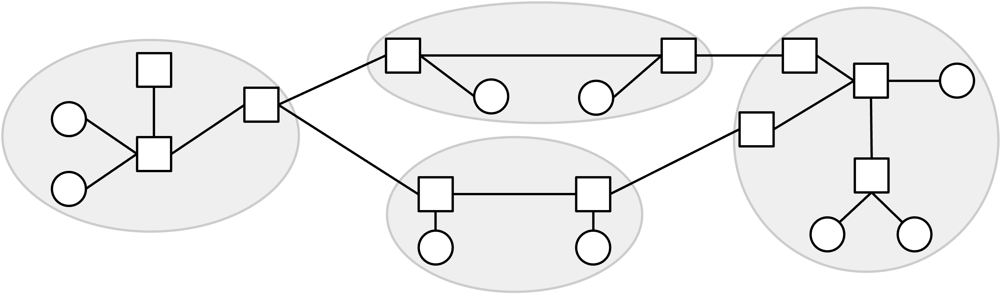
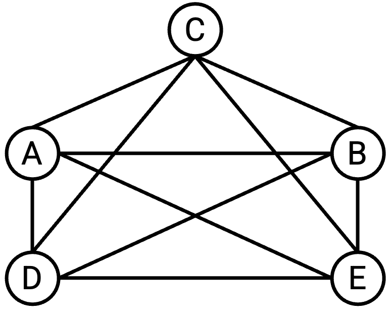
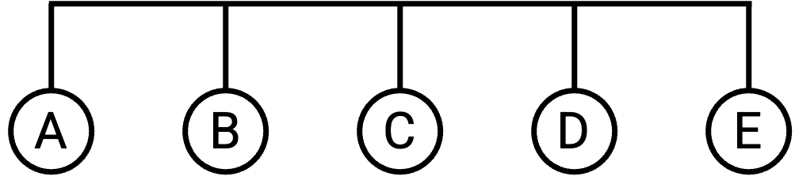
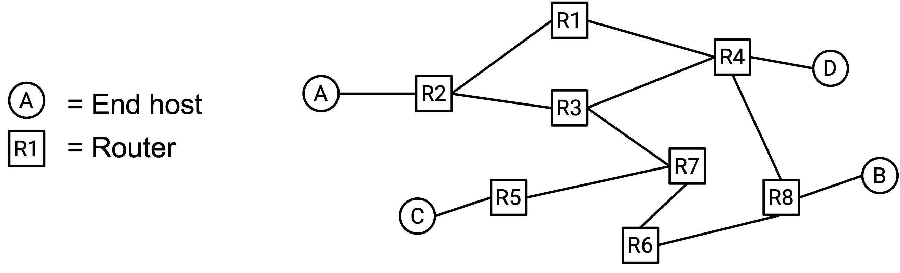
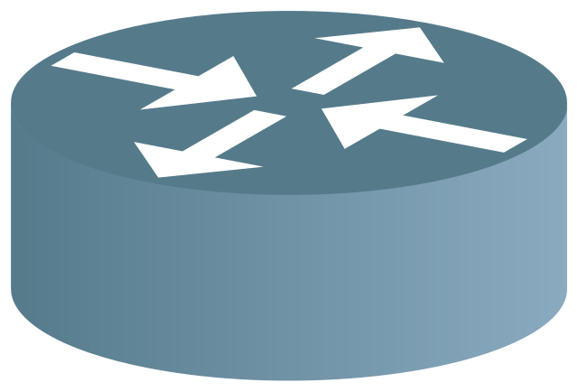
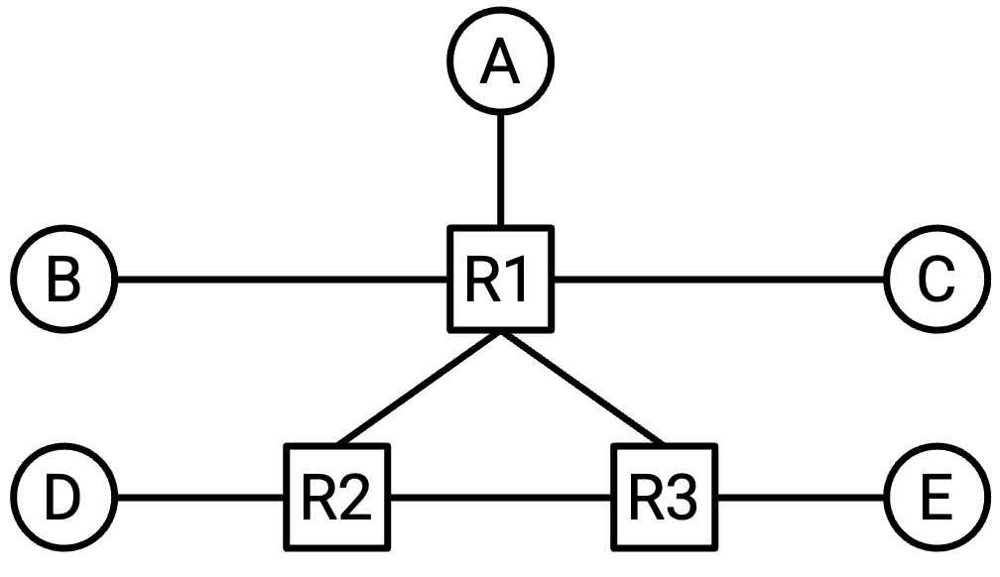
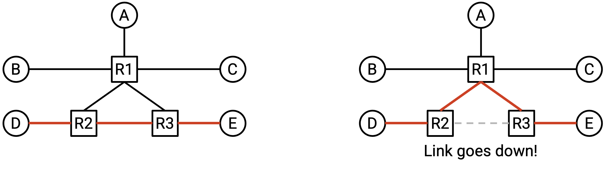
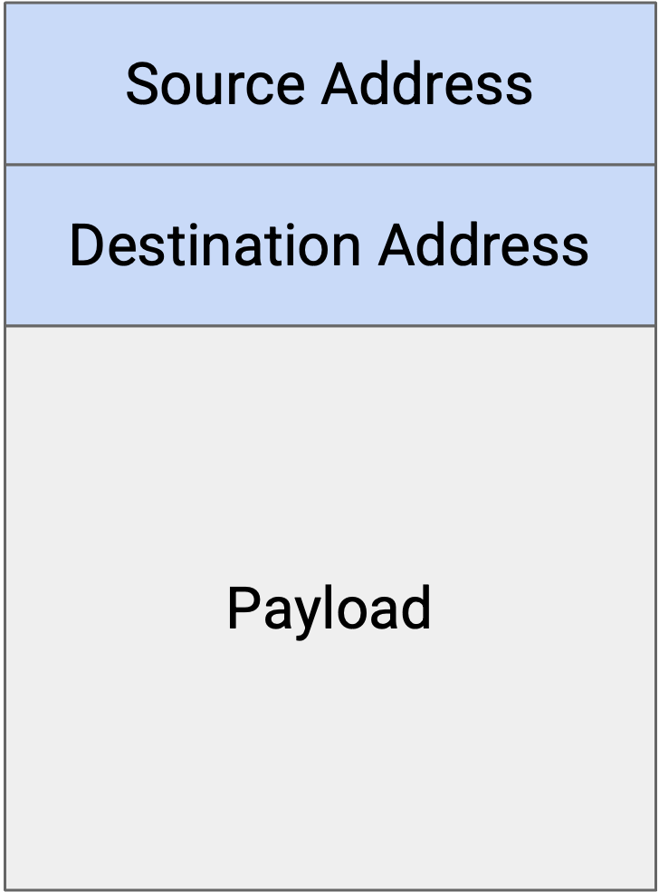
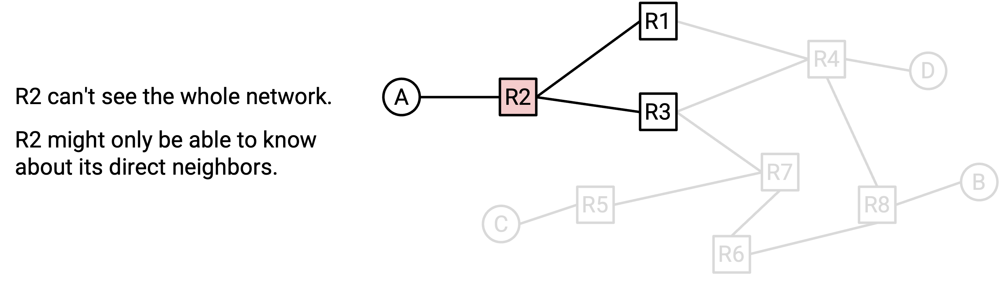

Model for Intra-Domain Routing
Modeling the Network as a Graph
Let’s create a simplified model of the Internet to help us formally define the routing problem.
Recall from the previous unit that we can think of the Internet as a set of machines, connected together with a set of links, where each link connects two of the machines on the network.

We can represent the network topology as a graph, where each node represents a machine, and each edge between two nodes represents a link between two machines.
Historically, sometimes links could connect more than two machines, but in modern networks, links essentially always connect exactly two machines.
Full Mesh Network Topology
Suppose we have two machines, A and B. If the two machines want to exchange messages, we could add a link between them.
But what if we had five machines instead of two? One possible approach is to create a link between every pair of machines, such that every machine is connected to every other machine. This is sometimes called a full mesh topology.

What are some drawbacks of this approach?
This approach doesn’t scale well. If we tried to scale this to the size of the modern Internet, we’d need a wire connecting every pair of computers in the world. When a new computer joins the network, we’d have create new links between that computer and every other computer in the world.
Although it can’t scale to the entire Internet, there are still some benefits to a a full mesh topology in smaller settings. In particular, having links between every pair of machines gives us a lot of bandwidth on the network. Every machine has a dedicated link to all other machines, and each pair of machines can use the full bandwidth on their dedicated link.
In general, there is no guarantee that each machine has a direct link to all other links. In other words, there is no guarantee that the underlying graph is fully-connected.
Single-Link Network Topology
In addition to the full mesh topology, there are other ways in which we can deploy links to connect up multiple machines. For example, we could use a single link to connect up all five machines:

(Here, we’re temporarily breaking the assumption that a link connects only two machines, by considering a link that connects more than two machines.)
This approach would scale better than the full mesh topology. For example, if a new computer joined the network, instead of creating five new links between the new computer and the five existing computers, we can just extend the existing wire to the new computer.
However, this approach is more limited in the amount of bandwidth available to the machines. In particular, there is only a single link, and all five machines need to share the bandwidth on this link.
In order to create more sophisticated network topologies, we will need to introduce the idea of a router.
Routers and Hosts
In our simplified model, we’ll classify every machine as being one of two types.
End hosts are machines connecting to the Internet to send and receive data. Examples of end hosts include applications on your own personal computer, such as your web browser. Web servers, such as a Google web server receiving Google search queries and sending back search results, are also end hosts. These machines send outgoing packets to other destinations, and could be the final destination for incoming packets. However, these machines usually do not receive and forward intermediate packets (i.e. packets with some different final destination).
Routers, by contrast, are machines connected to the Internet responsible for receiving and forwarding intermediate packets closer to their final destination. For example, consider the router installed in your home network, or routers living in a data center building somewhere. These machines usually do not create and send new packets of their own, and they usually are not the final destination for packets. For example, in your daily Internet use, you might want to send packets to a Google web server to perform a search, but you probably don’t need to send a message directly to your home router or a data center. Those routers will help you forward your packet toward Google, but they are not the final destination of your packet.

Depending on the network design, routers could be legal destinations, but in this unit, we’ll ignore routers as destinations. However, do note that routers potentially can be sources and send new packets of their own.
Routers are sometimes also called switches. There are historical differences between routers and switches, but nowadays, the terms are used interchangeably. In these notes, we’ll use “router” when possible.
In our graph model of the Internet, routers appear as intermediate nodes that are usually connected to multiple neighbors. End hosts appear as nodes that are usually connected to one or more routers. In practice, these assumptions aren’t always true.
In these notes, when possible, we’ll always draw routers as squares and end hosts as circles. In practice, sometimes routers are represented by other symbols. For example, this is a common router symbol used in network diagrams:

Network Topologies with Routers
Now that we have routers in addition to end hosts, we can create more complicated network topologies like this:

This topology lets us combine the benefits of the full-mesh and single-link topologies. In particular, this topology uses fewer links than the full mesh topology from earlier. Also, this topology has more bandwidth than the single link topology from earlier.
This topology is also more robust to failure. If a link goes down, the packet can take a different path through the network and still reach its destination.

End Hosts in Routing
Note that end hosts generally do not participate in routing protocols, since they don’t forward intermediate packets. Instead, end hosts are often connected to a single router with a single link. By default, the end host sends all outgoing messages to the router, which will figure out how to send the packet to its final destination. This strategy of sending everything to the router is sometimes called the default route of the end host.
When designing routing protocols, we often ignore end hosts, except as destinations (since the routers need to figure out how to reach different destinations).
Packets
Recall from the previous unit that when an application wants to send data over the Internet, the application creates a packet containing the data. As the packet is passed to lower-layer protocols, additional headers are wrapped around the packet with metadata to help the packet reach its destination.
In the routing unit, we’ll consider a simplified model where each packet has a header with metadata, and a payload with the application-level data. We’ll ignore nested headers and multiple layers for now.
Routing protocols are not concerned with the application-level data. It doesn’t matter whether the user is trying to send an image, or an HTML webpage, or an audio file; from the perspective of routing, we have a sequence of 1s and 0s, and we need a protocol to send those bits to their destination.
In the header, the main metadata field we’re concerned with is the destination address. This tells us the final destination of the packet. When a router receives a packet, the router reads the metadata field in the header to determine how to send the packet towards its final destination. The problem of figuring out where to send the packet is the key problem we’ll need to solve in routing.

Addressing
How do we write down the destination of the packet in the packet header? We’ll need some way of addressing each machine on the network. In other words, we need a protocol that assigns an address to each machine on the network.
Later in this unit, we’ll discuss scalable approaches to addressing. For now, let’s assign each machine a unique label (e.g. we could label three routers X, Y, and Z), and treat those labels as the addresses for each router. This will allow us to think about the routing problem and the addressing problem separately.
At this point, we can define the routing problem: When a router receives a packet, how does the router know where to forward the packet such that it will eventually arrive at the final destination?
Network Topologies Change
At this point, we have defined the routing problem, but there are still a few more practical considerations that make the routing problem difficult.
If the Internet could be drawn as a fixed, constant graph that never changes, then perhaps we could solve the routing problem by simply looking at the graph and computing paths through the graph.
However, the network topology is constantly changing. For example, links might fail at unpredictable times. Now, packets must be sent along a different route in order to reach the destination.
New links might also be added, creating additional paths that can be considered during routing.
The routing protocols we design need to be robust to these changing network topologies.
Routing Protocols are Distributed
If the network changes, perhaps we could solve the routing problem by updating our graph and then computing paths through the new graph.
Another problem that makes routing difficult is that routers don’t inherently have a global, birds-eye view of the entire network. For example, if a link somewhere else in the network fails, there’s no way for all routers to automatically know this. We will have to somehow propagate that information about the new network topology to the routers as part of our routing protocol.

This leads to routing protocols often being distributed protocols. Instead of a single central mastermind computing all the answers, each router must compute its own part of the answer (possibly without full knowledge of the network topology). Collectively, the answers computed by each router must form a global answer to the routing problem that allows packets to reach their end destination.
The distributed nature of routing protocols also means that we have to account for individual routers failing. If there was a single computer that was solving the problem, and that computer crashed and forgot the answer, we could simply make the computer re-compute the entire answer from scratch. However, in a distributed protocol, if one router crashes and forgets its part of the answer, our protocol will need to a way to help this one router recover from failure and re-learn its part of the answer.
Links are Best-Effort
Recall from the previous unit that protocols at Layer 3 and below are best-effort. In other words, when a packet is sent over a link, there is no guarantee that the packet reaches the destination. The link might drop the packet.
When designing routing protocols, we’ll need to account for this problem as well.